多分类及多标签分类算法
Contents
单标签二分类问题
单标签二分类算法原理
单标签二分类这种问题是我们最常见的算法问题，主要是指label标签的取值只有两种，并且算法中只有一个需要预测的label标签；直白来讲就是每个实例的可能类别只有两种(A or B)；此时的分类算法其实是在构建一个分类线将数据划分为两个类别。常见的算法：Logistic、SVM、KNN、决策树等。
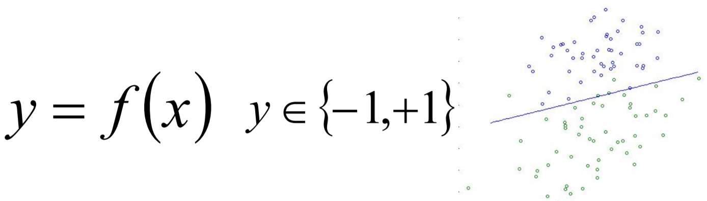
Logistic算法原理
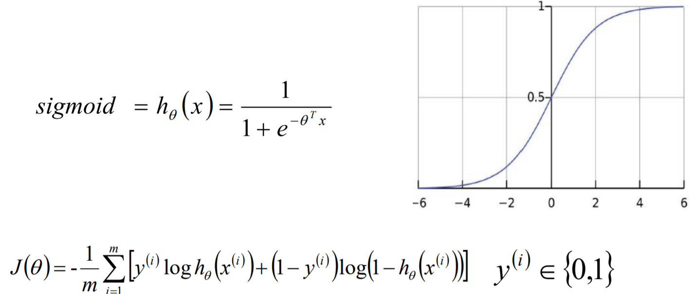
单标签多分类问题
单标签多分类问题其实是指待预测的label标签只有一个，但是label标签的取值可能有多种情况；直白来讲就是每个实例的可能类别有K种(t1 ,t2 ,…tk ,k≥3)；常见 算法：Softmax、KNN、决策树等；
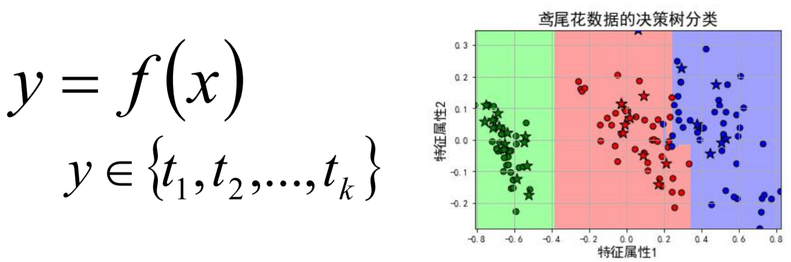
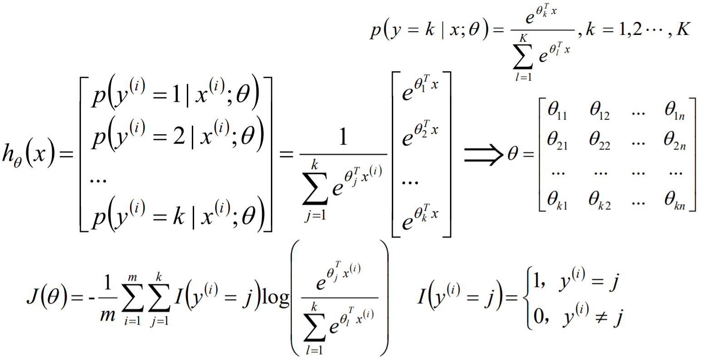
在实际的工作中，如果是一个多分类的问题，我们可以将这个待求解的问题转换 为二分类算法的延伸，即将多分类任务拆分为若干个二分类任务求解，具体的策略如下：
- One-Versus-One(ovo)：一对一
- One-Versus-All / One-Versus-the-Rest(ova/ovr)： 一对多
- Error Correcting Output codes(纠错码机制)：多对多
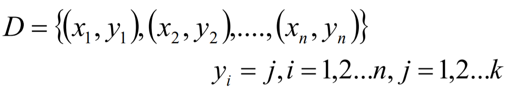
ovo
原理：将K个类别中的两两类别数据进行组合，然后使用组合后的数据训练出来一个模型，从而产生K(K-1)/2个分类器，将这些分类器的结果进行融合，并将分类器的预测结果使用多数投票的方式输出最终的预测结果值。

https://scikit-learn.org/0.19/modules/generated/sklearn.multiclass.OneVsOneClassifier.html#sklearn.multiclass.OneVsOneClassifier
ovr
原理：在一对多模型训练中，不是两两类别的组合，而是将每一个类别作为正例，其它剩余的样例作为反例分别来训练K个模型；然后在预测的时候，如果在这K个模型中，只有一个模型输出为正例，那么最终的预测结果就是属于该分类器的这个类别；如果产生多个正例，那么则可以选择根据分类器的置信度作为指标，来选择置信度最大的分类器作为最终结果，常见置信度：精确度、召回率。
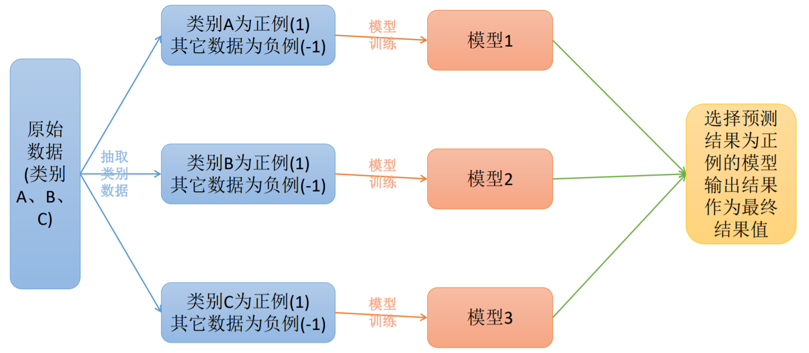
https://scikit-learn.org/0.19/modules/generated/sklearn.multiclass.OneVsRestClassifier.html#sklearn.multiclass.OneVsRestClassifier
ovo和ovr的区别
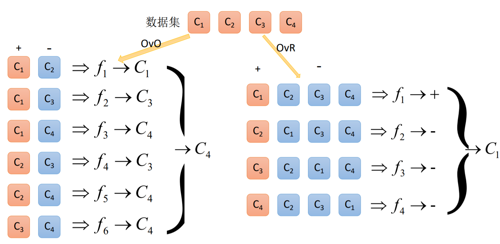
Error Correcting
原理：将模型构建应用分为两个阶段：编码阶段和解码阶段；编码阶段中对K个类别中进行M次划分，每次划分将一部分数据分为正类，一部分数据分为反类，每次划分都构建出来一个模型，模型的结果是在空间中对于每个类别都定义了一个点；解码阶段中使用训练出来的模型对测试样例进行预测，将预测样本对应的点和类别之间的点求距离，选择距离最近的类别作为最终的预测类别。
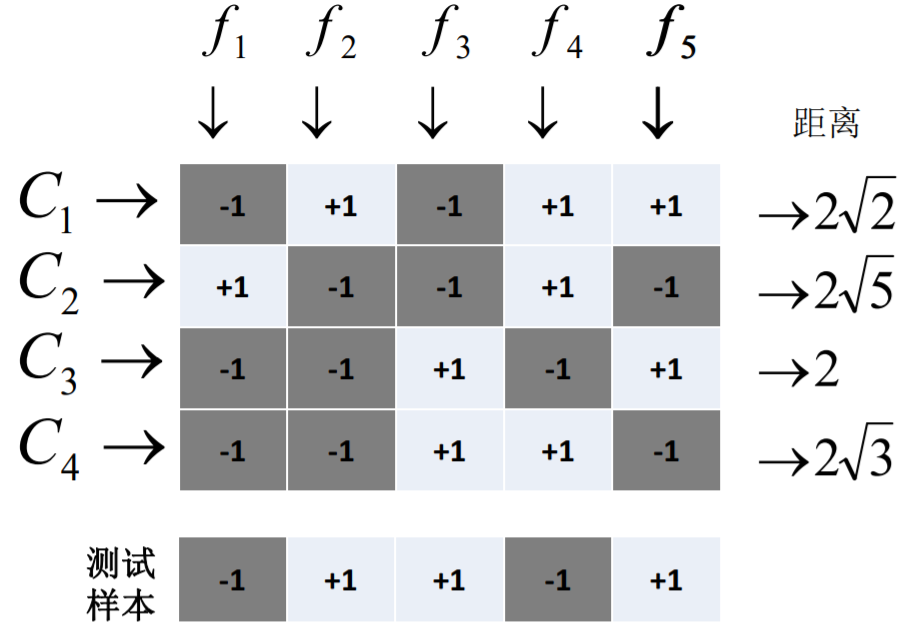
https://scikit-learn.org/0.19/modules/generated/sklearn.multiclass.OutputCodeClassifier.html#sklearn.multiclass.OutputCodeClassifier
多标签算法问题
Multi-Label Machine Learning(MLL算法)是指预测模型中存在多个y值，具体分为两类不同情况：
- 多个待预测的y值；
- 在分类模型中， 一个样例可能存在多个不固定的类别。
根据多标签业务问题的复杂性，可以将问题分为两大类：
- 待预测值之间存在相互的依赖关系；
- 待预测值之间是不存在依赖关系的。
对于这类问题的解决方案可以分为两大类：
-转换策略(Problem Transformation Methods)；
-算法适应(Algorithm Adaptation)。
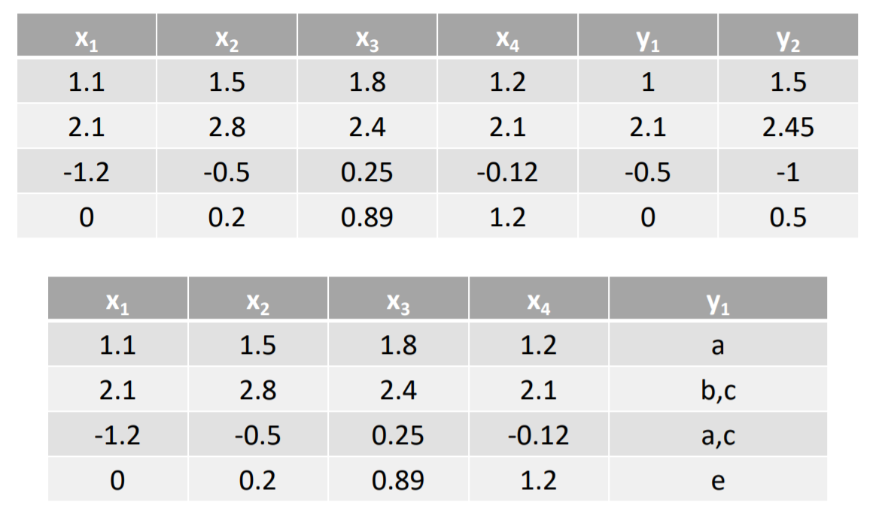
注意：在多标签中一般认为每个标签只有两个类别，即（+1，和 - 1），如果一个标签有多个类别，则需要把类别分解成取值为+1或者- 1的新标签。
Problem Transformation Methods
Problem Transformation Methods又叫做策略转换或者问题转换，是一种将多标签的分类问题转换成为单标签模型构造的问题，然后将模型合并的一种方式，主要有以下几种方式：
- Binary Relevance(first-order)
- Classifier Chains(high-order)
- Calibrated Label Ranking(second-order)
Binary Relevance
Binary Relevance的核心思想是将多标签分类问题进行分解，将其转换为q个二元分类问题，其中每个二元分类器对应一个待预测的标签。
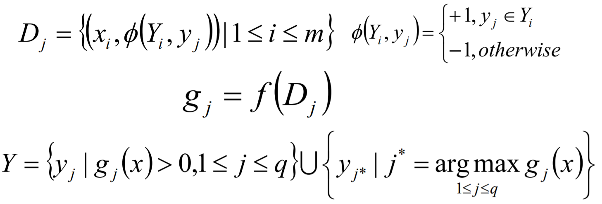
Binary Relevance方式的优点如下：
- 实现方式简单，容易理解；
- 当y值之间不存在相关的依赖关系的时候，模型的效果不错。
缺点如下：
- 如果y直接存在相互的依赖关系，那么最终构建的模型的泛化能力比较弱；
- 需要构建q个二分类器，q为待预测的y值数量，当q比较大的时候，需要构建的模型 会比较多。
Classifier Chains
Classifier Chains的核心思想是将多标签分类问题进行分解，将其转换成为一个二元分类器链的形式，其中链后的二元分类器的构建是在前面分类器预测结果的基础上的。在模型构建的时候，首先将标签顺序进行shuffle打乱排序操作，然后按照从头到尾分别构建每个标签对应的模型。
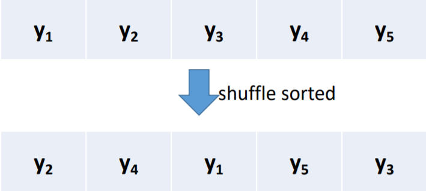
Classifier Chains模型构建
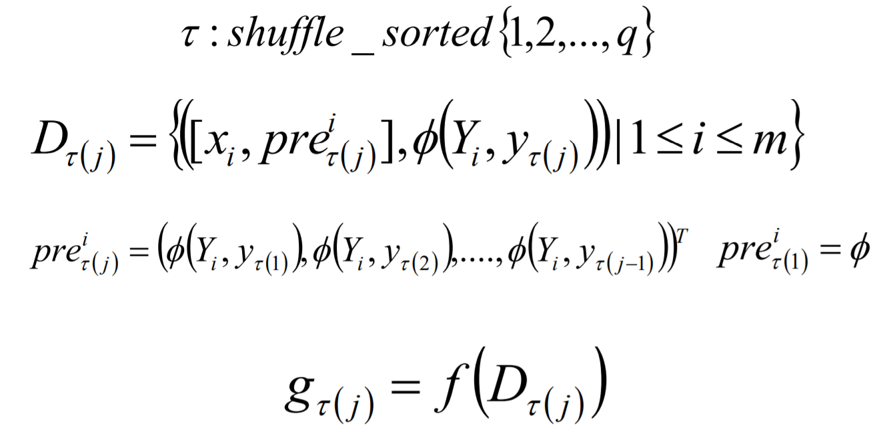
Classifier Chains模型预测
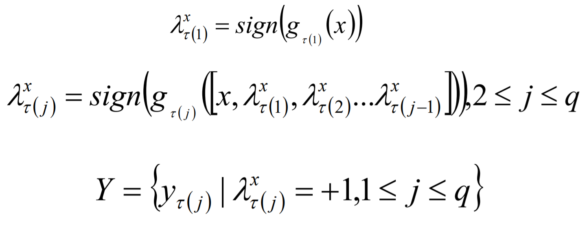
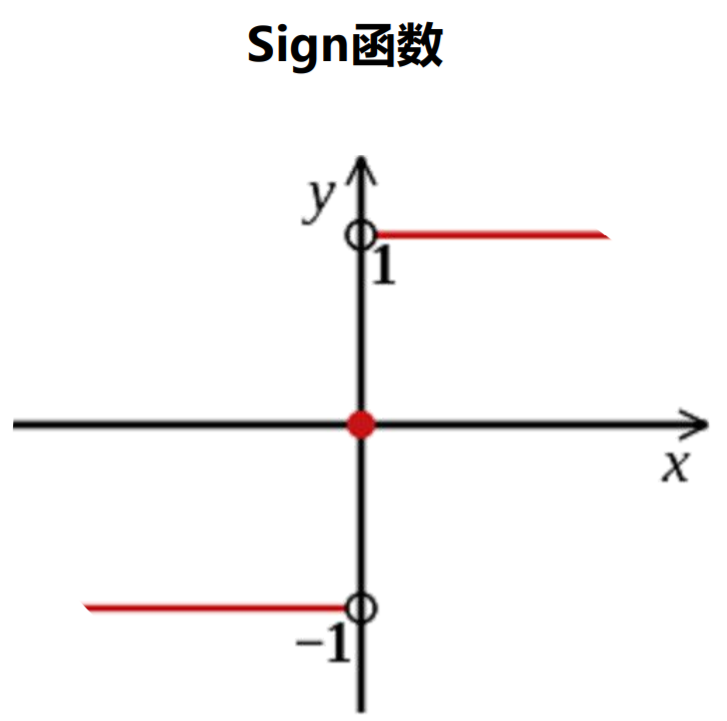
Classifier Chains方式的优点如下：
- 实现方式相对比较简单，容易理解；
- 考虑标签之间的依赖关系，最终模型的泛化能力相对于Binary Relevance方式构建的模型效果要好。
缺点如下： 很难找到一个比较适合的标签依赖关系。
https://scikit-learn.org/0.19/modules/generated/sklearn.multioutput.ClassifierChain.html#sklearn.multioutput.ClassifierChain
Calibrated Label Ranking
Calibrated Label Ranking的核心思想是将多标签分类问题进行分解，将其转换为标签的排序问题，最终的标签就是排序后最大的几个标签值。
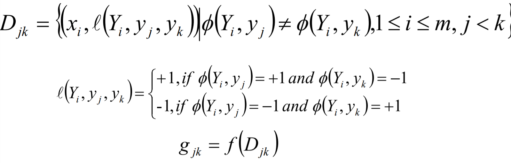
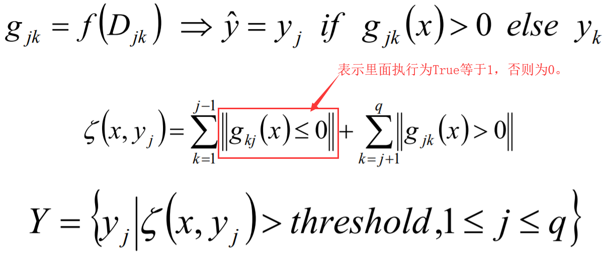
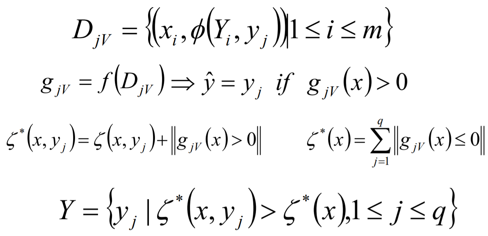
Calibrated Label Ranking 方式的优点如下：
- 考虑了标签两两组合的情况，最终的模型相对来讲泛化能力比较好。
缺点如下：
- 只考虑两两标签的组合，没有考虑到标签与标签之间的所有依赖关系。
https://scikit-learn.org/0.19/modules/generated/sklearn.multioutput.MultiOutputClassifier.html#sklearn.multioutput.MultiOutputClassifier
Algorithm Adaptation
Algorithm Adaptation又叫做算法适应性策略，是一种将现有的单标签的算法直接应用到多标签上的一种方式，主要有以下几种方式：
- k近邻算法(k-Nearest Neighbour, KNN)的思想：如果一个样本在特征空间中的k个最相似(即特征空间中距离最近)的样本中的大多数属于某一个类别，那么该样本属于这个类别。
- ML-kNN的思想：对于每一个实例来讲，先获取距离它最近的k个实例，然后使用这些实例的标签集合，通过最大后验概率(MAP)来判断这个实例的预测标签集合的值。
- 最大后验概率（MAP）：其实就是在最大似然估计(MLE)中加入了这个要估计量 的先验概率分布。
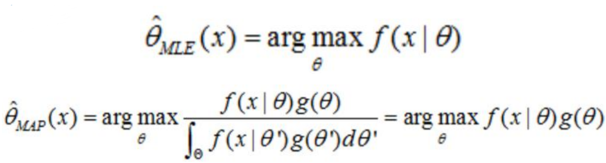
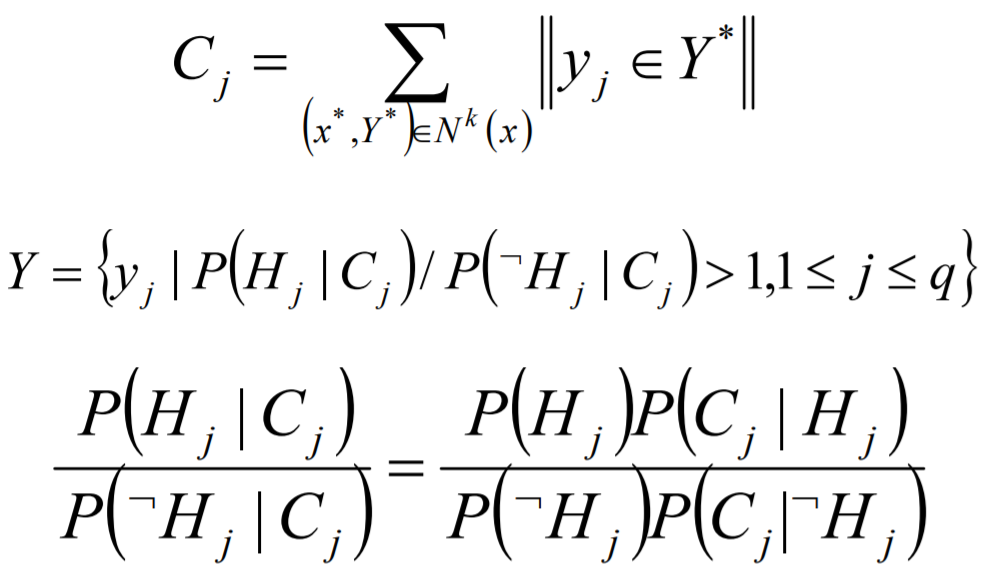
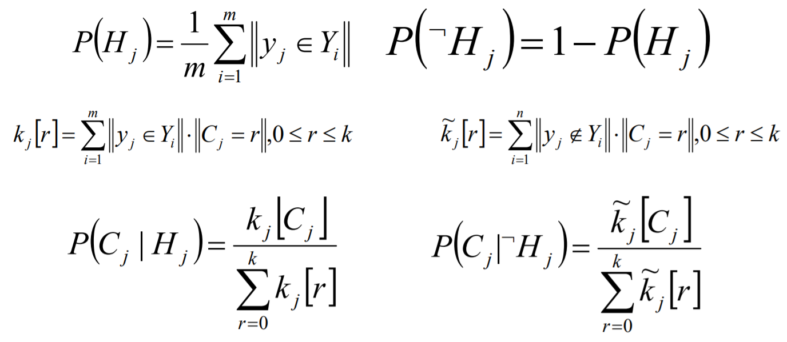
ML-DT是使用决策树处理多标签内容，核心在于给予更细粒度的信息殇增益准则来构建这个决策树模型。
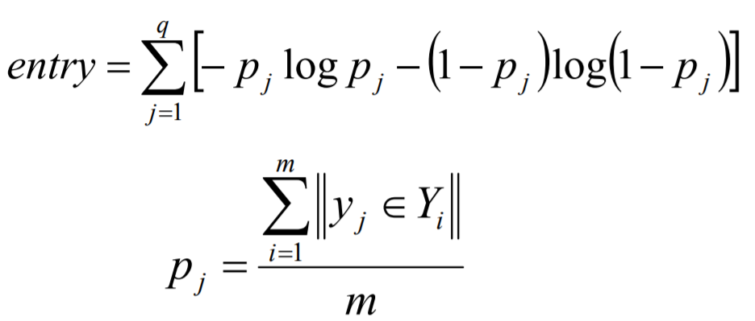
Author nanshusu
LastMod 2021-08-26